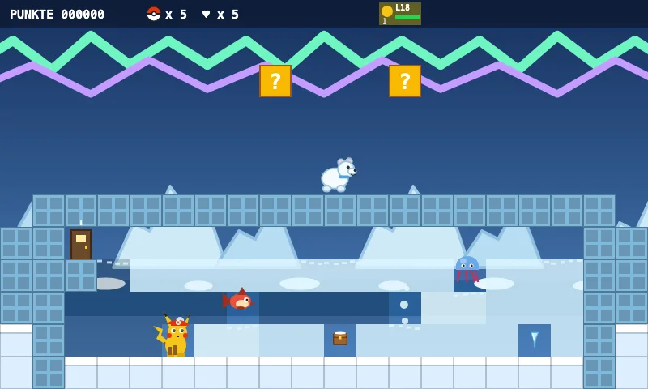
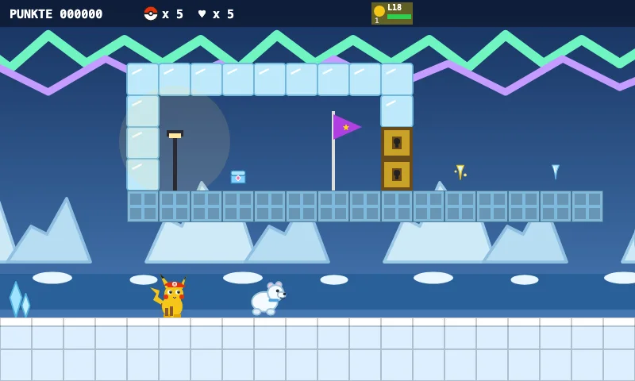
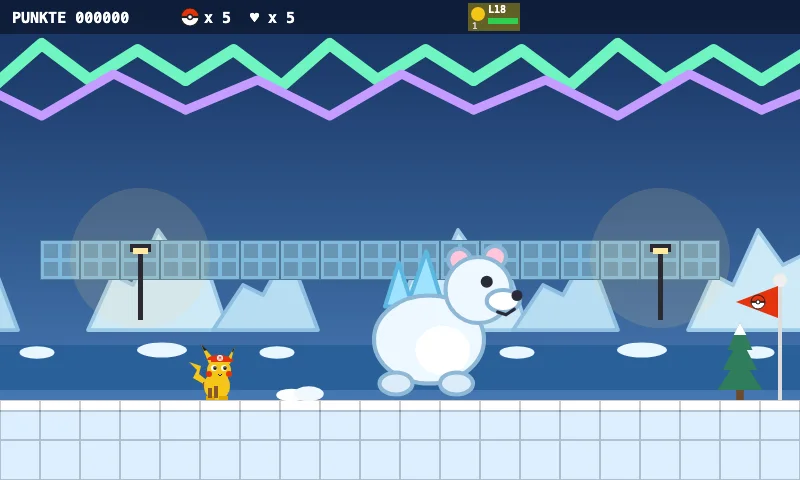
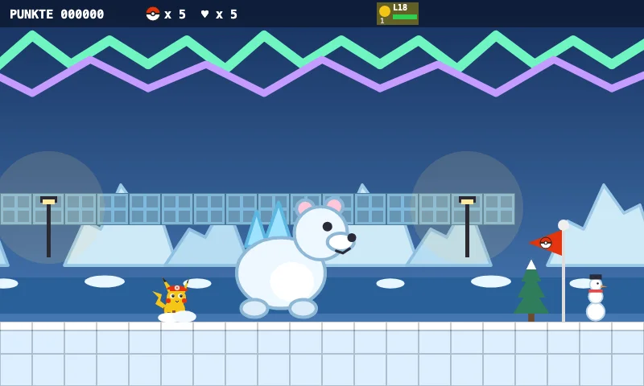

Approved level · 1-9
1-9 Polar Sea
Welcome to the Polar Sea! Ice blocks are slippery, ice floes break away for a moment.
Collect five icicles – they open the secret igloo!
Five looks inside the level

The world
Welcome to the Polar Sea! Ice blocks are slippery, ice floes break away for a moment.

Objective
Collect five icicles – they open the secret igloo!

Special feature
Hop up the ice floes to the igloo. The Glacierbear is waiting ahead!

Boss
Glacierbear, Guardian of the Icy Sea — Charizard is great at melting ice!

The final stretch
The goal flag waits at the end. Can you make it all the way?
Validated and completed by the game bot.